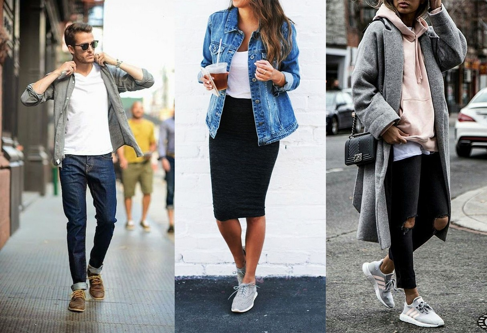
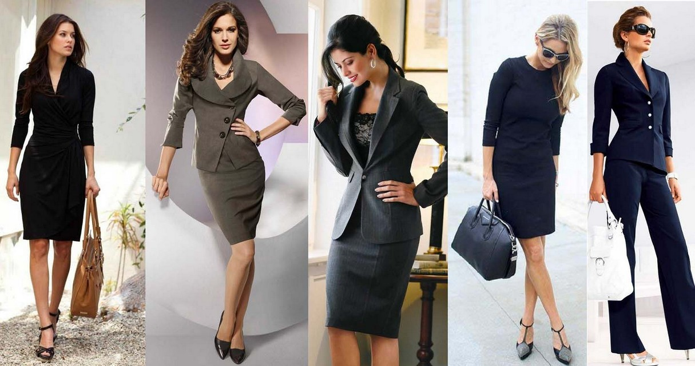
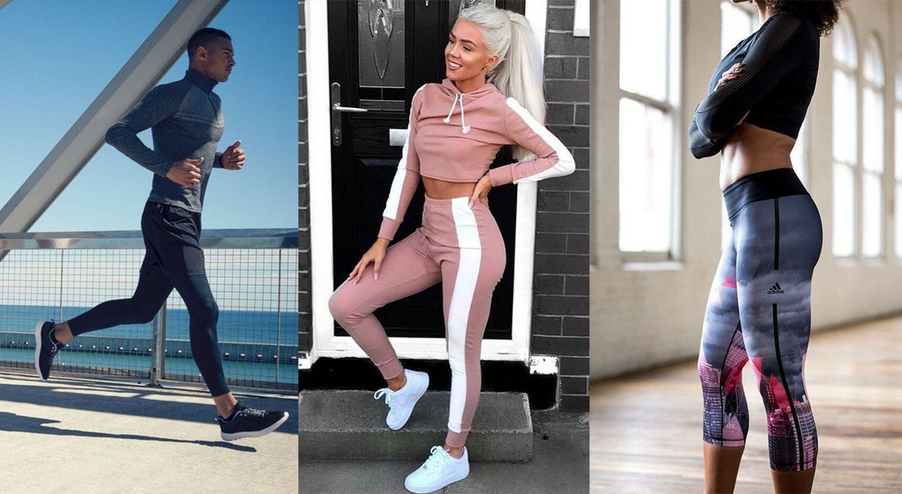
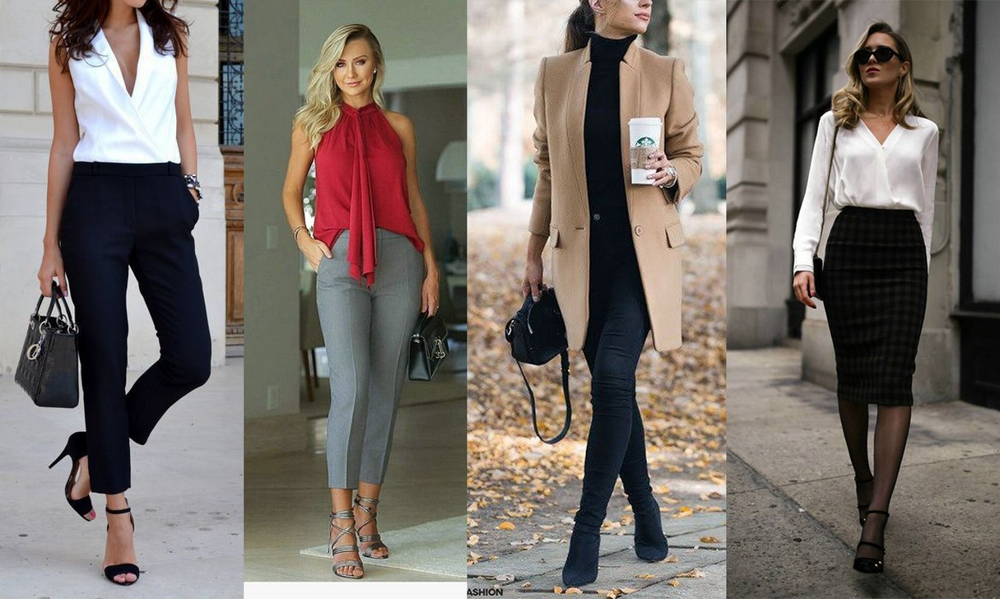

Повседневная одежда — это стиль с комфортом. Такая одежда не вызовет особых волнений у законодателей моды. Вместе с тем, она идеальна для ежедневного ношения, поскольку является долговечной и удобной. Казуальная одежда — это дух уличной моды.

Деловой стиль одежды не допускает небрежности, неряшливости, помятости или потертости. Все швы должны быть идеально прострочены.
В формальной деловой среде стандартом одежды для мужчин и женщин является костюм, пиджак, брюки, юбка или платье в сочетании с подходящими аксессуарами.

Спортивная одежда используется для занятий спортом, выполнения физических упражнений, поскольку является практичной, комфортной и безопасной. Типичный спортивный стиль — это шорты, спортивные костюмы, леггинсы, лосины, футболки, теннисные рубашки и рубашки поло.
Довольно часто спортивную одежду носят, как повседневную. Такой стиль называется Active Wear.

Классический стиль одежды выражает ощущение стабильности и комфорта. Он подразумевает безупречный пошив, прямые линии и фокусируется на простой элегантности. Если вам близок этот стиль, то ваш гардероб наверняка говорит об элегантности и утонченности его владельца. Классический стиль одежды также называют «сложной модой».
Экзотический стиль — это фокус на на чем-то незаурядном, необычном и оригинальном. Довольно часто такой образ выглядит таинственно и интригующе. Стиль одежды сосредоточен на богатых цветах, вышивке, таинственных узорах, этнических мотивах, принтах и мозаике. Зачастую такая одежда выглядит более ярко и эффектно вживую, чем на фото.